Vježbe
Početna
O meni
Vježbe
Video
Ovo su vježbe koje smo radili kroz semestar
Vektorska grafika
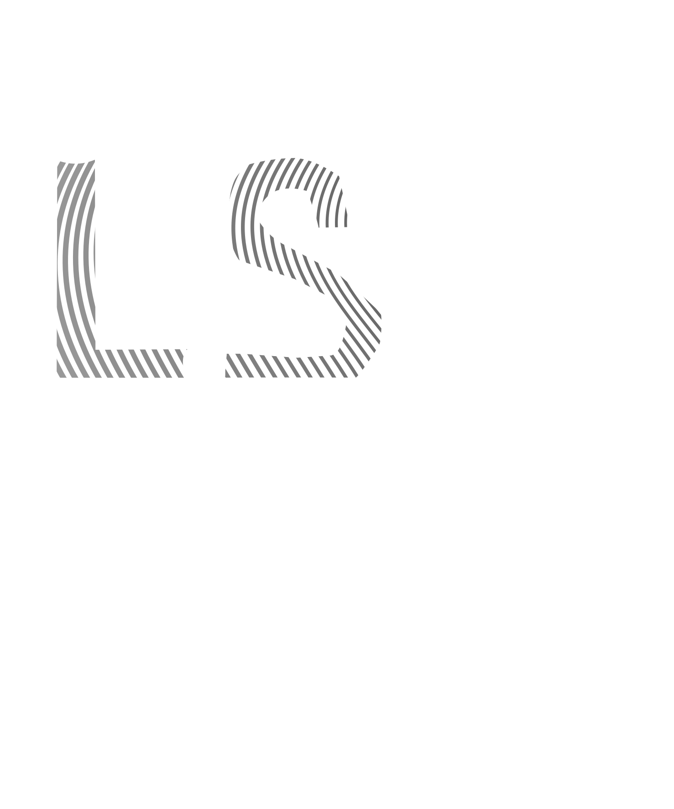 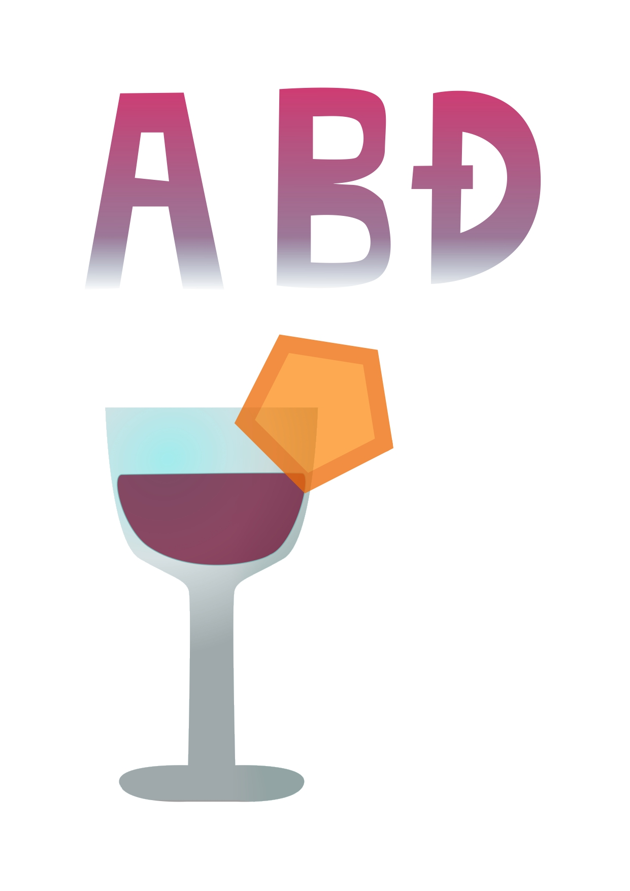 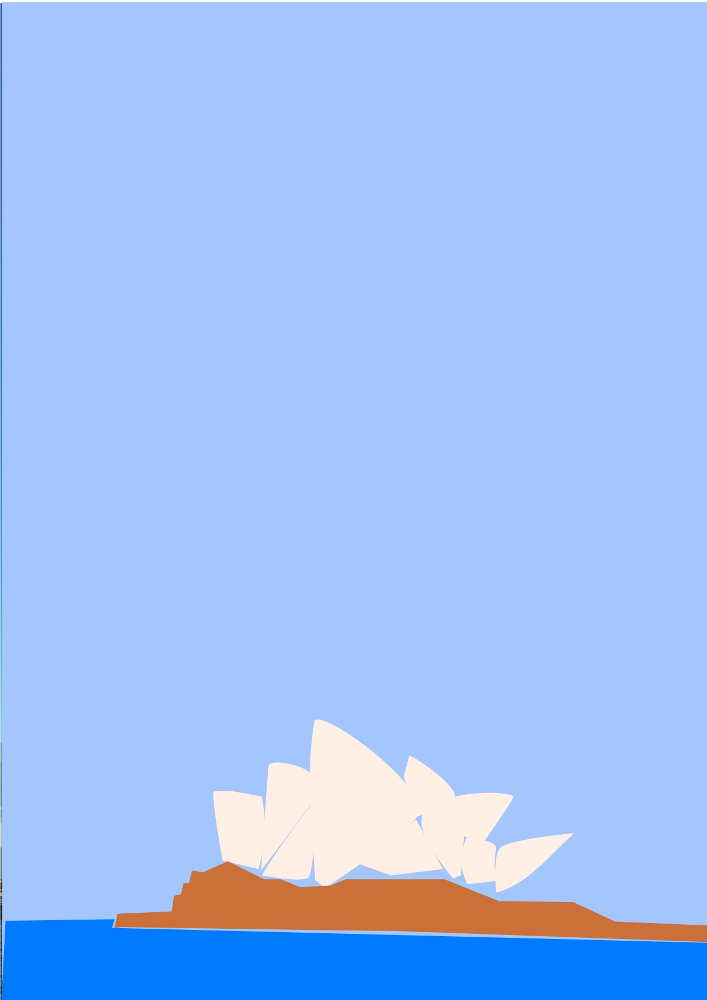 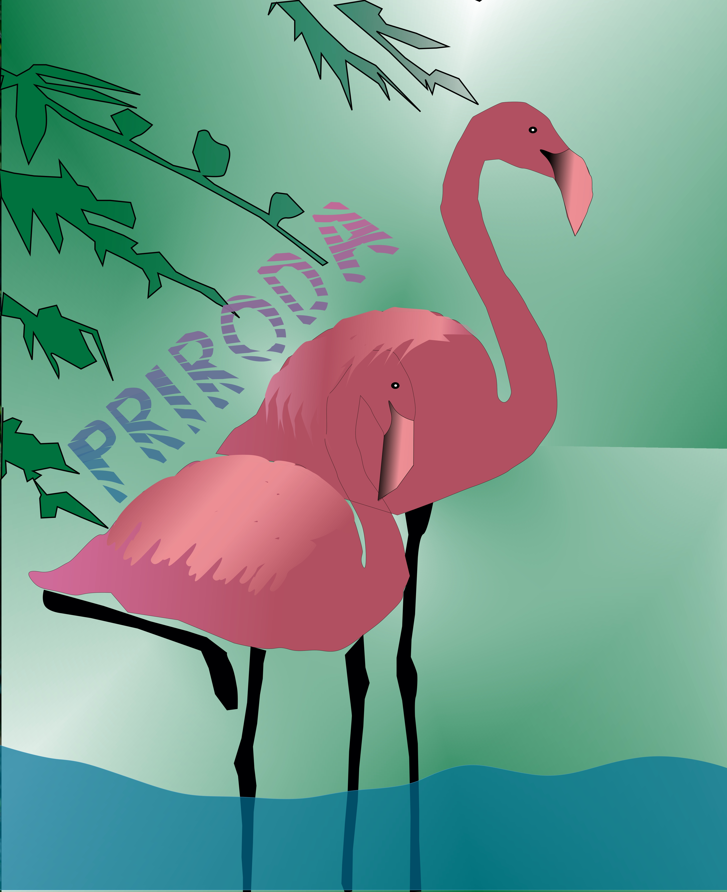
Piksel grafika
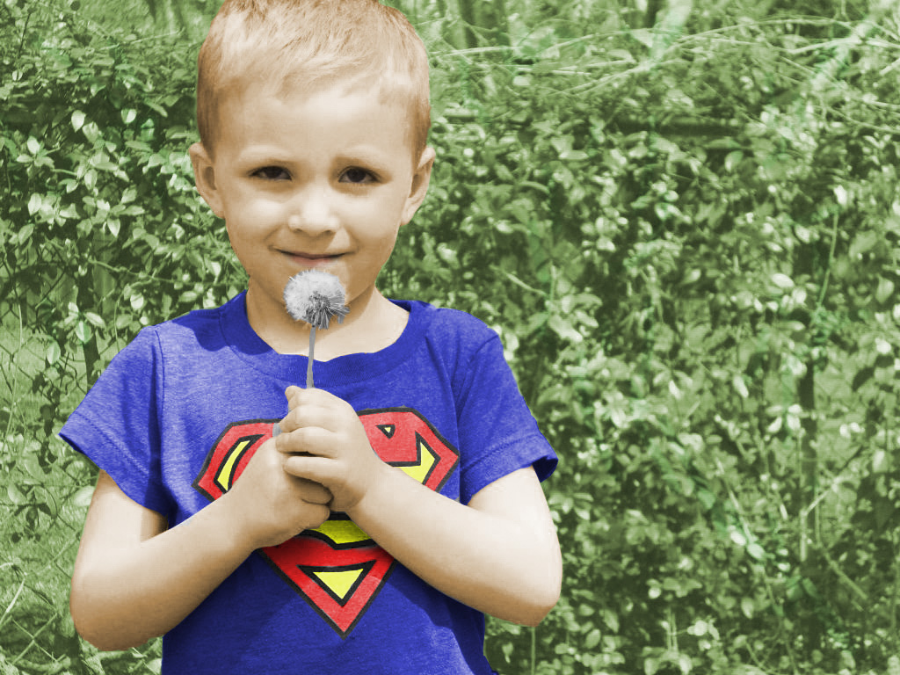 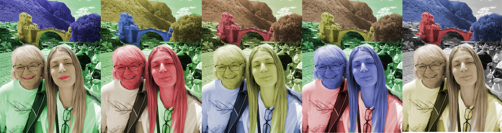 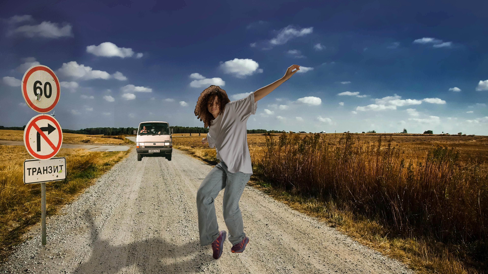 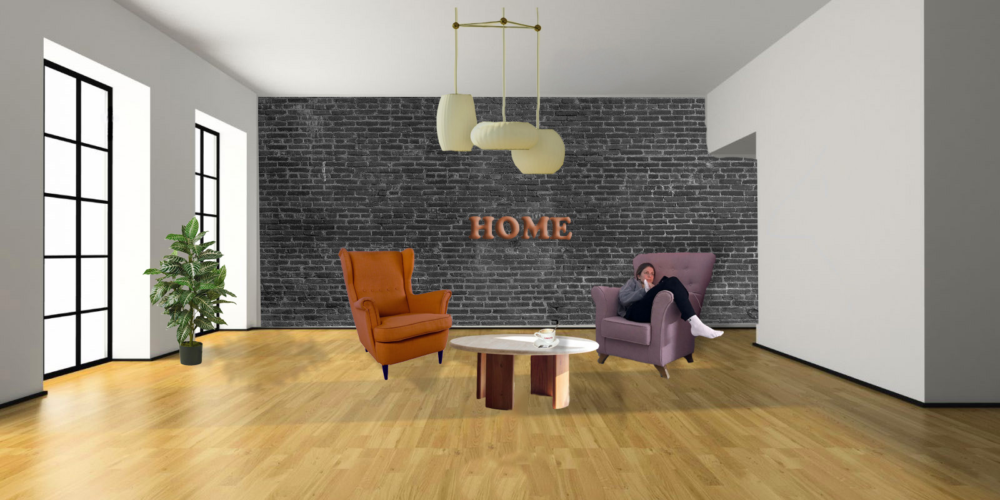
Obrada videa i web
Vaš preglednik ne podržava prikaz videa.
Koristila sam fade in, spin i još neke efekte
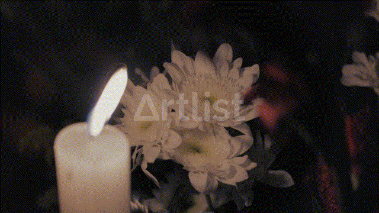
 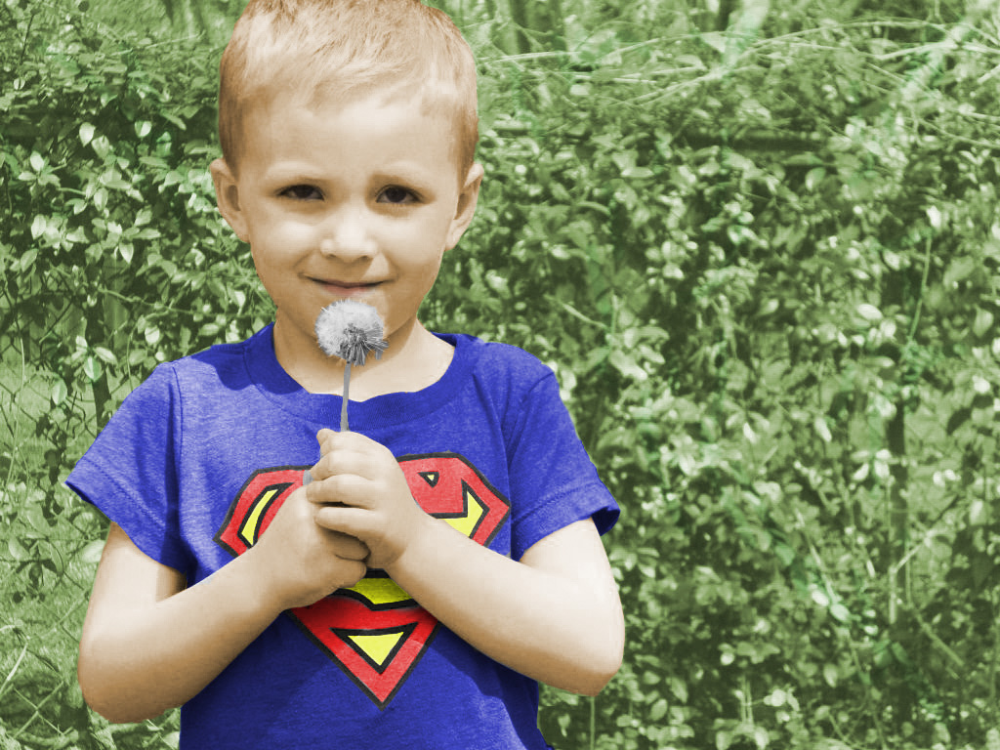
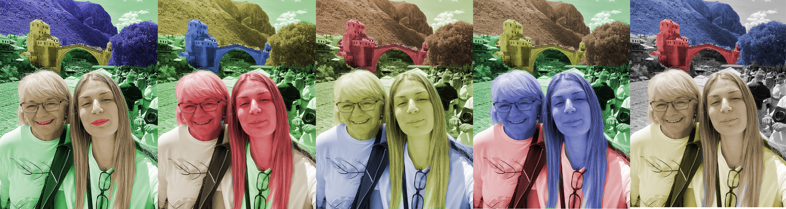
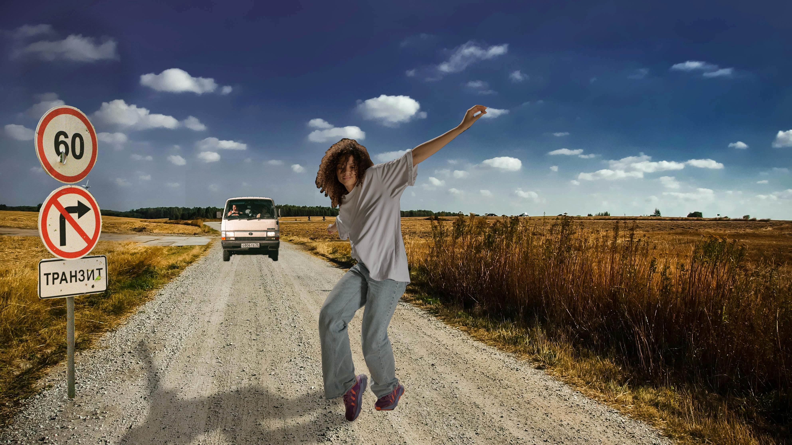
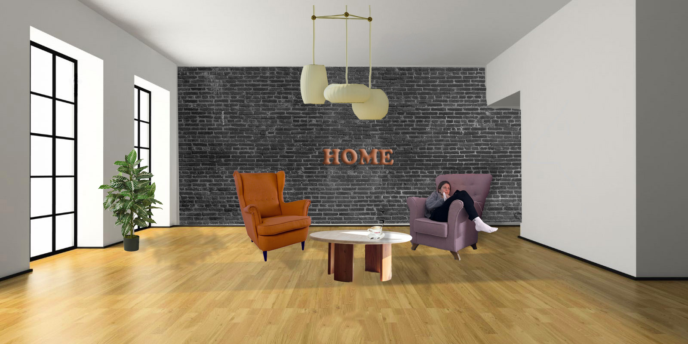
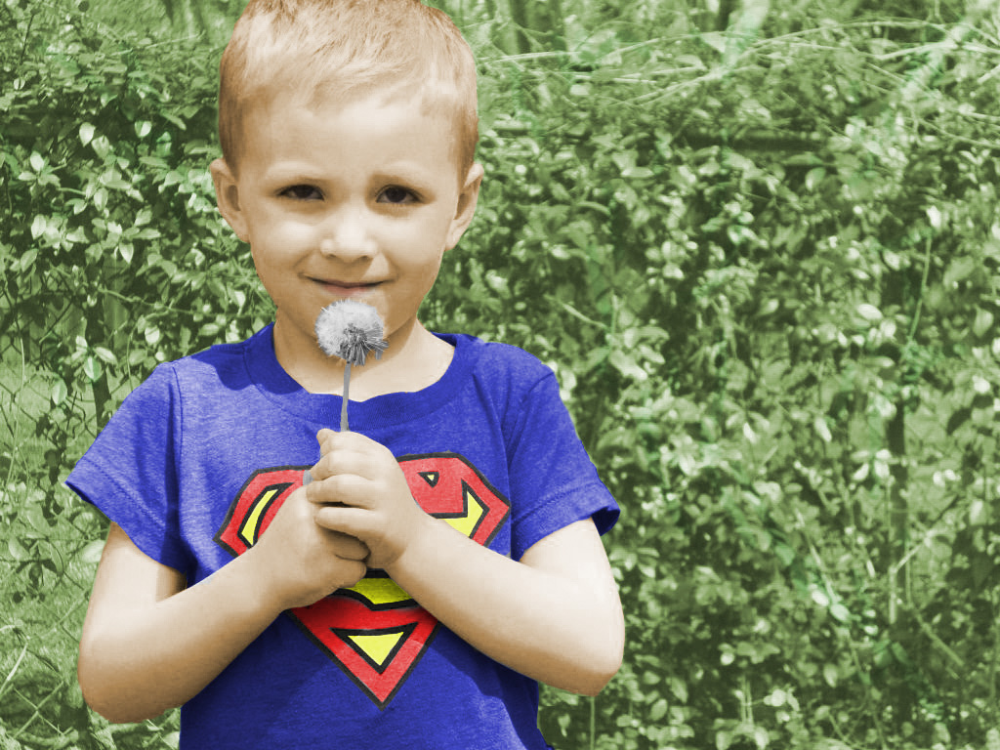
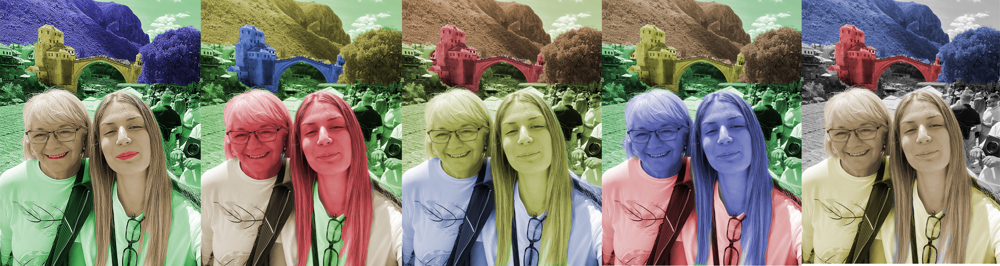
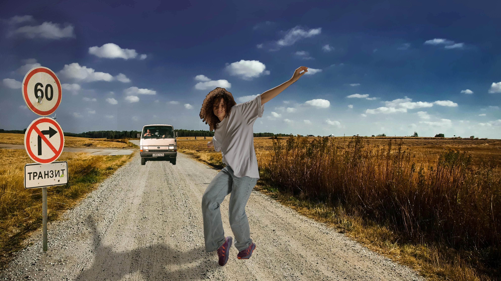
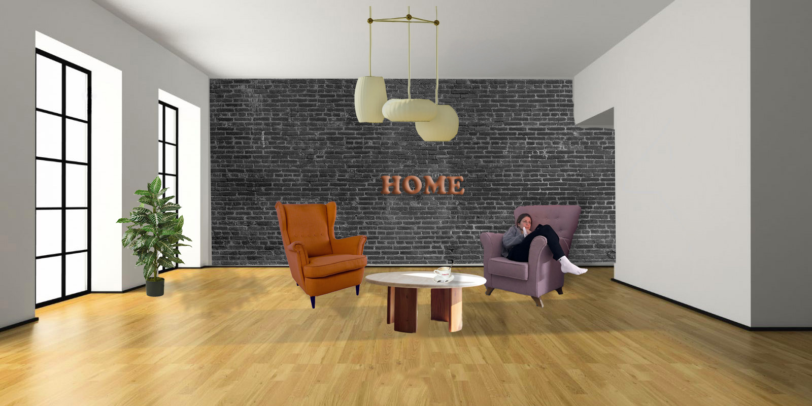